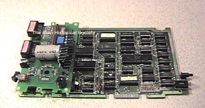
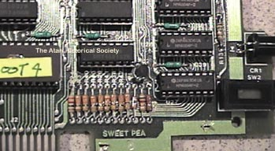
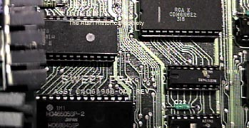
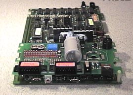

The Atari 1060 CP/M
Module
"Sweet Pea"

Atari looked into the possibilities of adding CP/M "Control Program for
Microprocessors" Operating system compatibility to its new line of XL home
computers. The Atari 1060 CP/M Module, nicknamed "Sweet Pea"
was a stand-alone Add-On Module for use with all Atari computer systems
including the original 400/800 computers.

Before MS-DOS became the defacto standard in the computer world, during
the years of 1982-1984 many people weren't sure who was going to win the
DOS super-battle, would it be CP/M DOS 2.2 or MS-DOS 2.1 ???
Atari hedged its bets on CP/M with its installed base of thousands of available
commercial programs which would expand its line of available software for
use on its computer systems.

The Atari 1060 CP/M box has its own composite video output circuitry and
can produce both 40 and 80 column text and ATASCII (Atari ASCII) graphics.
It has a Boot ROM onboard and separate SIO ports for Disk Drives and Printers,
so far we have not been able to
fully boot the Sweet Pea, but we have been able to get it to produce text
on a monochrome composite monitor. It was thought that perhaps
the Boot ROM might contain self loading code very similar to the Atari
850 and 1030 auto-download. So far we have been unable to boot
the 1060.

The Atari 1060 was slated for cancellation in 1983 when the Atari 1090:
XL Expansion System box was being made ready for release. A
new card called the Atari 1066 would be a CP/M card that would be installed
into the 1090XL and allow for CP/M use on the XL series computers, leaving
the 400/800 and 1200XL computer owners without this option.
Technical Documentation
Atari
"Sweetpea" CP/M Add-On Production Specification Document
In an effort to preserve the ROM code to
many of Atari's unreleased and sometimes
one of a kind products, the actual ROM
code is being put up onto the site for
all to study, examine and preserve.